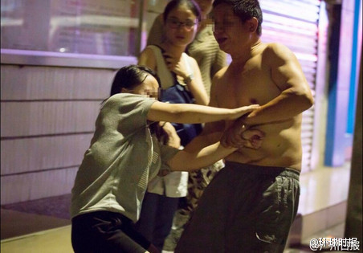
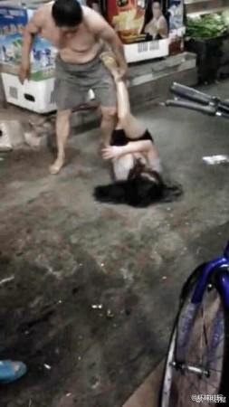
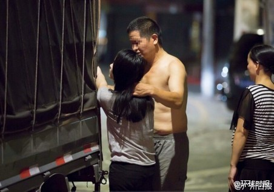

环球时报这个范的微博还挺多啊……@环球时报:【16岁少女遭亲生父亲长期猥亵多年】广州16岁少女被父亲当街暴打，更曾被要求与其同住一张床，如不服从就会被打。“大概十三四岁开始，他就开始对我动手动脚。”甚至在她在湖南老家念书时，也会被叫出学校开房。更有街坊证实，看到她爸爸将手伸进她衣服里抚摸。（广州日报）16岁女孩疑遭父亲猥亵多年 不服从就挨打 
原来环球时报的微博也是这个范的啊……@环球时报:【铁路员工持“内部票”乘高铁一等座拒补票 殴打女乘务员 】7月31日，贵阳至南京的G1322次高铁上，多名自称铁路工作人员的男子欲无票搭乘高铁一等座。女乘务员检查工作证并要求补票时，他们态度蛮横，推搡并击打其面部。根据内部规定，持通行票坐高铁只能冲抵二等座或站票。澎湃铁路员工持内部票违规乘高铁一等座拒补票，女乘务员理论被打
 】广州16岁少女被父亲当街暴打，更曾被要求与其同住一张床，如不服从就会被打。“大概十三四岁开始，他就开始对我动手动脚。”甚至在她在湖南老家念书时，也会被叫出学校开房。更有街坊证实，看到她爸爸将手伸进她衣服里抚摸。（广州日报）
】广州16岁少女被父亲当街暴打，更曾被要求与其同住一张床，如不服从就会被打。“大概十三四岁开始，他就开始对我动手动脚。”甚至在她在湖南老家念书时，也会被叫出学校开房。更有街坊证实，看到她爸爸将手伸进她衣服里抚摸。（广州日报） 16岁女孩疑遭父亲猥亵多年 不服从就挨打
16岁女孩疑遭父亲猥亵多年 不服从就挨打